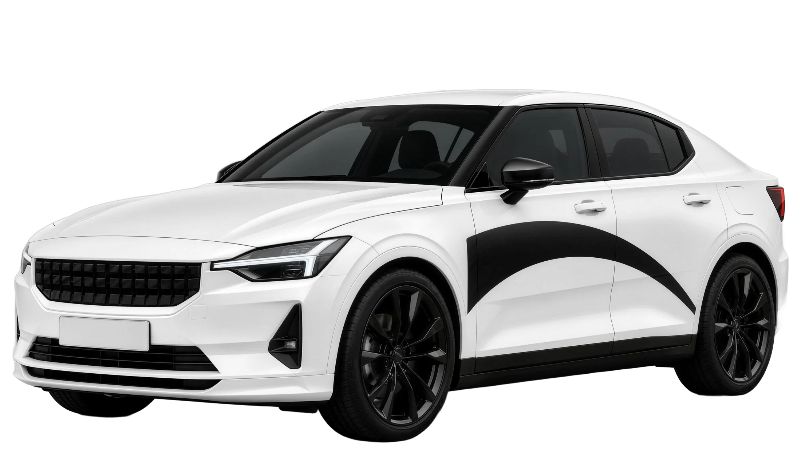
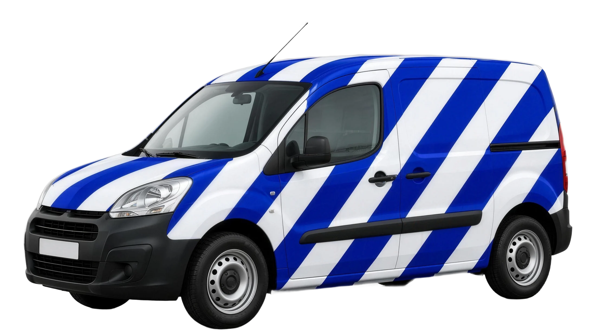

La publicité qui roule.
Publication réseaux sociauxIdentité visuelle · version 1 · 8 novembre 2026
La publicité qui roule. Une identité noire et blanche, un mot gras et un seul signe : le point qui avance.
01
Deux mots anglais que tout le monde comprend, en Belgique comme ailleurs : la publicité, et le mouvement. Le nom dit le métier en sept lettres.
02
Un mot en minuscules, très gras et serré, comme les logos que tu aimes. Le o de « move » est remplacé par le picto : un rond plein, percé d'une flèche de lecture. C'est une roue, un bouton « lecture » et un point sur une carte en même temps.
Archivo très gras, élargi à 118 % et resserré : les lettres se touchent presque, le mot devient un bloc lisible de loin, même sur une voiture qui passe.
Il remplace le o au même diamètre que les lettres rondes. On lit toujours « adsmove », et le signe vit aussi tout seul.
Le triangle pointe toujours vers la droite : la marque avance, comme la voiture et comme la vidéo qu'on lance.
03
Le signe de la marque. Il sert d'icône d'application, de favicon, de photo de profil et de sticker. Sa construction est simple, pour qu'il reste net de 16 px à une portière entière.
Construction
La roue qui tourne. Le bouton lecture du média. Le point qui marque une position, hérité du point de ton ancien logo.
04
Une version pour chaque format. La version horizontale reste la règle ; les autres servent quand la place manque.
05
La zone de protection et les tailles minimales garantissent que le logo reste lisible, sur un écran comme sur une voiture.
Rien ne s'approche du logo à moins d'un diamètre de picto, noté x.
96 px de large
25 mm de large
16 px
Picto seul, 60 mm minimum
Logo, 500 mm de large ou plus
06
Le noir et blanc validé pour le site reste la base. Le jaune signal est une proposition : la couleur des marquages au sol, réservée aux petits accents.
#0B0B0DRVB 11 11 13Fond principal#F4F4F2RVB 244 244 242Texte et logo#2A2A2ERVB 42 42 46Lignes et cartes#FFE100RVB 255 225 0Proposition, accents seulementRépartition conseillée
60 % nuit, 30 % craie, 8 % bitume, 2 % signal.
07
Deux familles gratuites, déjà utilisées sur le site. Anton pour les titres condensés, Archivo pour tout le reste, et Archivo très gras élargi pour le logo seulement.
Titres · Anton
Toujours en capitales, interligne 1,12. Vérifier les accents en majuscules qui touchent la ligne du dessus.
Texte · Archivo
Nous concevons votre campagne, habillons des voitures et les faisons circuler dans vos zones.
Anton 76 px
Anton 40 px
Archivo 800, 20 px
Archivo 400, 17 px, interligne 1,5
Archivo 600, 13 px, espacé
08
Un trait de 1,8, des bouts arrondis et des formes construites sur le cercle du picto. Elles servent au site, à l'application et aux rapports.
09
Trois motifs tirés du logo, pour les fonds, les réseaux sociaux et les covering. Ils accompagnent le logo, ils ne le remplacent jamais.
Le défilé : le picto répété en ligne, comme des voitures qui se suivent.
Le marquage : des pointillés de route qui guident l'œil vers le logo.
L'arc : la courbe des covering Medium et Complet, reprise en fond.
10
Le picto est le seul élément qui bouge. Il roule, il tourne, il avance : jamais d'effet gratuit.
Durées : apparition 1,2 s, survol 0,3 s, transitions de page 0,6 s. Courbe douce en fin de mouvement. Tout s'arrête si l'utilisateur demande moins d'animations.
11
Le logo sur les supports réels. Les voitures sont des simulations à plat sur nos visuels, sans rien sur les vitres.


Icône d'application
La publicité qui roule.
Publication réseaux sociauxVotre marque passe ici.
Publication avec l'accent signal12
Le logo ne se modifie jamais. Ces exemples montrent les erreurs les plus fréquentes.
La suite
Le logo et l'accent signal. Le nom reste à vérifier en France (INPI).
Redessiner le mot à la main sur la base d'Archivo, pour un logo qui n'est plus une police, puis livrer les fichiers SVG, PNG et PDF.
Passer le site, le CRM et le fichier Figma sous adsmove, et préparer les gabarits de covering.